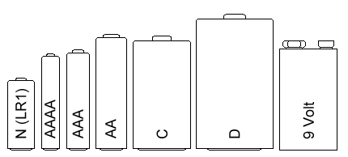
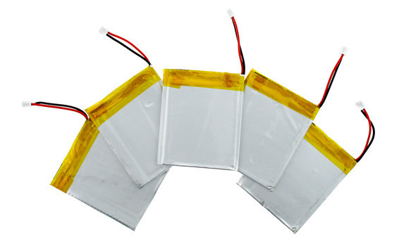
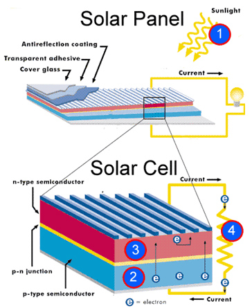

Energy Generation
Table of Contents
1 Non-renewable Energy
- Non-renewable energy sources are fossil fuels that were formed from the remains of animals and plants that lived millions of years ago. They cannot be replenished quickly and will eventually run out.
Coal
Heat energy and hot gases convert water into steam which powers a turbine to create high-voltage electricity.
Smaller amounts are used as a domestic heat source.
Advantages:
- Stable, large-scale and high-power electricity generation.
- Relatively cheap to extract and convert.
- Reliable
Disadvantages:
- Coal power plants emit pollution such as carbon dioxide, sulfur, mercury, selenuim and arsenic.
- Technologies to reduce coal power plant emissions are expensive.
- Coal mining impacts significantly on the landscape.
Oil
Processed and split into petroleum products such as petrol, paraffin and diesel.
In power plants, oil is burnt to heat water and produce steam, which propels turbine blades to produce electricity.
Advantages:
- Stable, large-scale and high-power electricity generation.
- Relatively cheap to extract and convert
Disadvantages:
- Oil power plants are highly polluting.
- Oil exploration impacts on the landscape.
- Oil extraction risks environmental disasters.
Gas
Burning gas can power turbines, with the waste heat powering a steam turbine.
Natural gas is used in homes for heating or cooking.
It has lower emissions than ther fossil fuels - its combustion emits carbon dioxide at half the rate of coal.
Advantages:
- Stable, large-scale and high-power electricity generation.
- Relatively cheap to extract as ready-made fuel.
- Cleaner than coal or oil.
Disadvantages:
- Burning gases are highly polluting.
Example Question
Explain two reasons why coal is classed as a non-renewable energy source?
2 Renewable Energy
- Renewable energy sources use natural energy to make electricity. Around 20% of the energy produced in the UK come from renewable energy sources.
Biomass
Organic matter derived from organisms such as wood, crops, rubbish, landfill gas and alcohol fuels.
This organic matter is burnt to create heat which is converted into steam energy to drive turbines.
Advantages:
- Waste materials from farming and rubbish can be used.
Disadvantages:
- Large areas needed to cultivate crops, to produce the the materials.
- The burning of these materials still emits fumes into the atmosphere.
Biodiesel
Made from natural elements such as plants, vegetables and fermented waste cooking oil.
Can be used to power diesel powered engine for cars or trucks.
Advantages:
- Uses waste from plants and farming products.
- Does not give off harmful chemicals in its production.
Disadvantages:
- Large areas of land are needed to grow the crops required to produce the oils etc.
Tidal
Turbines generate electricity from the movement of tidal water.
Atrificial tidal barriers are constructed across tidal rivers, bays and esturies.
Advantages:
- No emissions.
- Powerful.
- Tides are predictable and stable.
- Barages can be used for secondary purposes.
Disadvantages:
- Lower energy output compared to burning fossil fuels.
- Large barriers may have an ecological impact.
- Expensive to build relative to fossil fuel plants.
- Only available along coastal areas.
Wind
Wind turbines use propellers to spin shaft which drive generators.
Advantages:
- Freely available.
- Can be used in remote areas.
- No emissions.
Disadvantages:
- When placed in the sea, they can restrict shipping traffic.
- Wind power is not stable or predictable.
- Wind farms are often felt to be unsightly in the environment.
- Expensive to set up complared to fossil fuel plants.
- Can be a danger to wildlife, especially birds.
Solar
Solar (photovoltaic) panel convert the suns radiation to electrical energy.
Solar thermal power plants use the sun's rays to heat a fluid that is circulated through pipes, transferring heat to water and producing steam.
Steam is then converted into mechanical energy in a turbine, which is used to spin a generator.
Advantages:
- Reliable source of power in warmer countries.
- Homes can have their own electricity supply.
- More electricity is produced in stronger sunshine.
Disadvantages:
- Only produces energy during the day.
- Could change ecology when large solar farms are used to replace traditional farming land.
- Expensive to set up.
- Effectiveness of power generation depends on geographical location.
Hydroelectric
A dam traps water that flows through tunnels and turns turbines to produce electricity.
Advantages:
- Large amount of power at a low cost.
- Can have secondary purposes, such as a water reserve.
Disadvantages:
- Expensive to set up.
- Construction may damage the environment.
- land has to be used to create the dam.
3 Energy Storage
Batteries and cells
- Batteries convert chemical energy to electrical energy. This chemical reaction causes electrons to collect on the negative terminal.
- When a battery or cell is connected in the circuit, current is forced to flow from the negative terminal to the positive terminal.
- A battery is defined as 2 or more cells. Each cell having approximately 1.5V, depending on the types of chemical used in the cell.
- Batteries come in many shapes and sizes, the most common round cell sizes are D, C, AA, AAA and AAA.
- The 'rectangular' battery we use is the PP3 battery, which runs at 9V.

- Prismatic cells are flexible cells.These are very expensive to manufacture, but recharge easily.
- They tend to have a shorter lif than the standard cylindrical cell.
- These are regularly used in mobile phones, small electronic toys and low profile laptops.

- To read more about cell and batteries, click on this link to go to the wikipedia page.
Solar cells(photovoltaic cells)
- These cell convert light energy into electrical energy. The light being produced from the sun is often used.
- They contain 2 layers of silicon, treated to allow electrons to flow when the sunlight fall on them.
- This is an environmentally friendly way of producing energy after the initial cost to purchase and the manufacturing process.
- The down side is they do not produce energy when there is no light, they take up valuable space (solar farms) and they do not always match the environment they are in.

- To read more about solar cells, click on this link.
Mains electricity
Supplied from power stations through the national grid.
This is supplied to households at 230V alternating current (AC). This current changes direction 50 times per second, therefore the frequency is at 50Hz.
This energy can be harmful to humans and animals if touched due to the high voltage and current produced.
Most of the mains electricity still come from burning fossil fuels.
Wind Power
Converts the movement of the air (wind) into mechanical power which can the be used to spin a generator, producing the electricity needed.
Groups of wind turbines can create significant amounts of energy, less useful on a smaller scale.
Small scale versions are built for home use.
The amount of energy produced is directly dependant on the amount of wind blowing.
Sample Questions
- Evaluate the use of using a solar panel system for generating electricity in a rural area? (9 marks)
- Compare renewable to non-renewable energy sources with regards to the impact they have on the environment. (10 marks)
4 Choosing the appropriate energy sources
Portability of power source
- You will need to consider how portable the divice you are going to use or design needs to be.
- If your equipment needs a power source at 220V A.C. then you can use a converter to convert D.C. voltage (usually 12V from a car battery) to the 220V A.C. needed for the equipment.
Environmental impact
- There is no energy source that is completely environmentally friendly. The production of the device will in most cases involve some level of fossil fuel emmisions, or an impact on wildlife habitation in order to extract materials.
- Some of the impact mat not be entirely noticeable, these ar known as passive impacts. This could be noise emission, such as those generated by wind turbines.
- There also needs to be a consideration for where the materials come from and how they are transported to the manufacturer and then onto the customer. All of these will usually involve the use of shipping and trucks.
Power output
- The amount of energy produced is not consistent, it depends greatly on the type of powerplant used to generate the electricity.
- Most renewable energy do not produce electricity predictably or consistently. For example, wind turbines will only prouduce energy when the wind is blowing within a particular range.
- A designer must consider these factors and select an energy source suitable for the product they are designing.
Circuit/System connections
- A designer will need to consider how the product they have made will connect to the power source. For example, if you are using a PP3 9V battery, you will need to use a battery snap.
Cost
- Different energy sources have different financial costs.
- Batteries can be very expensive and do not provide long term power.
- The cost of setting up alternative power solutions must be carefully considered by the designer.
Sample Questions
- Explain 2 factors tht determine the most appropriate energy source for powering a remote controlled toy car. (4 marks)
- Compare new emerging environmentally friendly technologies with older fossil fuel technologies.
- Explain what is meant by 'Carbon Footprint'?
- Describe 2 Advantages of using wind as an energy source.
- Explain 3 way in which manufacturers could reduce their carbon emissions.
- Explain 2 reasons for using tidal power instead of coal.